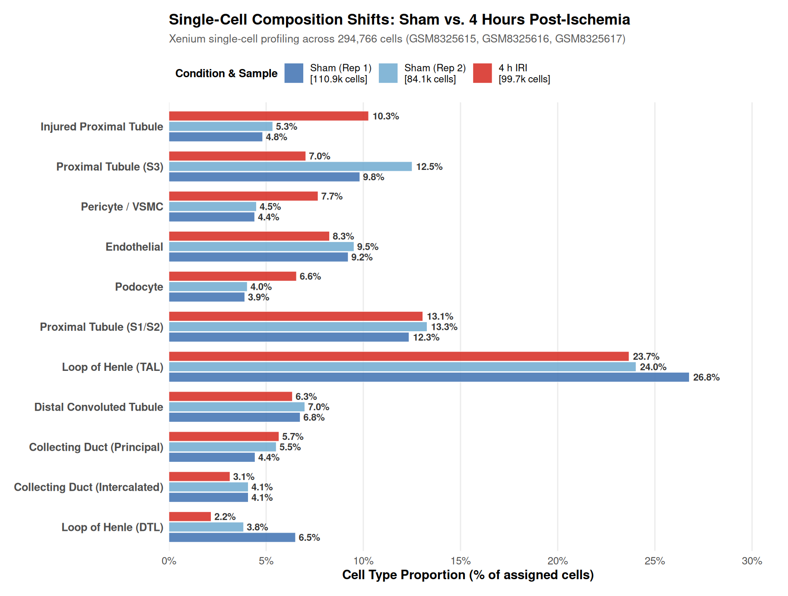
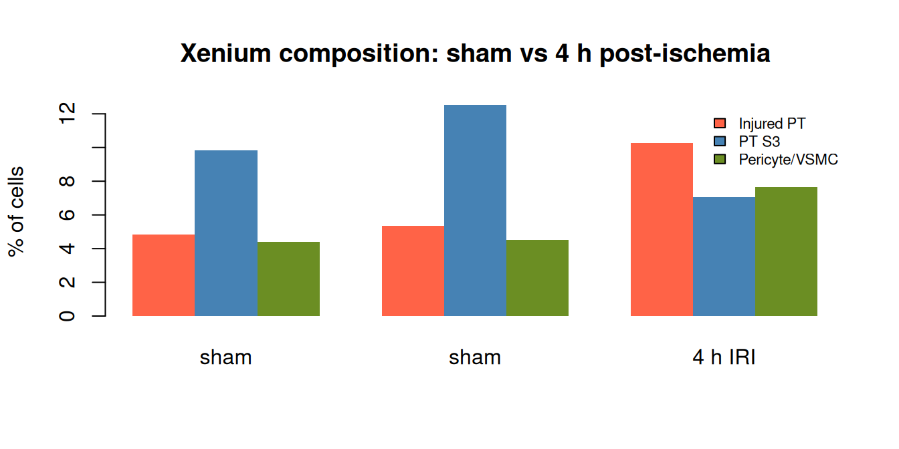

The cleanest biology in this cohort is its clearest experiment: a mouse ischemia-reperfusion injury time course, profiled by both Xenium (single cells) and Visium (whole transcriptome), from sham through six weeks. Ischemia-reperfusion injury is the model of acute kidney injury, and the field’s central spatial question is a precise one: which cells are affected first, and where?
The textbook answer, taught in the first week of renal physiology, is that the S3 segment of the proximal tubule is the most vulnerable cell in the kidney: it performs the most metabolically expensive reabsorption in the most oxygen-poor environment, the outer medulla. This chapter asks whether the data recover that answer on their own.
Comparing the sham and four-hour time points on the single-cell platform:


Two facts stand out, and both are exactly the textbook biology:
Injured proximal-tubule cells nearly double, from 5.3% (sham) to 10.3% (4 h).
The S3 segment collapses, from 12.5% to 7.0%, as the vulnerable segment’s cells convert to the injured state.
Pericytes/vascular smooth muscle expand from 4.5% to 7.7%, the earliest vascular response.
Endothelial cells decline modestly, consistent with early endothelial injury.
The modules were not told that S3 is vulnerable. The marker set scored “injured proximal tubule” (VCAM1, Havcr1, Lcn2) and “S3” (SLC7A13, SLC22A7) independently, and the data performed the conversion: four hours after ischemia, S3 cells disappear into the injured state. This is the vulnerable-segment biology, recovered without supervision, at single-cell resolution, within hours.
The composition numbers come from the same annotation pipeline as Chapter 3, applied to the three Xenium sections of the time course, so the cell identities here are the same reference-free marker assignments used across this analysis. The panels are Xenium panels, which is why the whole-transcriptome arm below matters: a panel cannot measure every gene I would want to watch during injury.
The same experiment was profiled on Visium, and the whole-transcriptome sections add the genome-scale context the panel cannot:
| gsm | top_svg |
|---|---|
| GSM8323120 | Slc12a1;Wfdc15b;Cyp7b1;Slc27a2;Gatm;Dbi;Cat;Pck1 |
| GSM8323122 | Lcn2;Igfbp5;Cyp7b1;Pck1;Slc12a1;Mal;C130074G19Rik;Aif1l |
The injured Visium section’s leading spatially variable gene is Lcn2, also known as NGAL, the canonical acute-kidney-injury marker. Its spatial pattern marks where the injury landed. Alongside it sit metabolic genes (Pck1, Gatm) whose cortex-to-medulla gradient is the molecular map of the kidney’s metabolic zonation, the very zonation that makes the outer medulla the vulnerable zone. The Xenium panel, which does not measure Lcn2, instead surfaces distal-tubule and metabolic genes, a panel-limited but still informative view of the same injury.
These readouts come from Moran’s I, a spatial autocorrelation statistic computed per gene across the section’s spots (Chapter 9 describes the procedure in full). Lcn2 is the leading spatially variable gene on the injured section but is absent from the Xenium panel, so the panel arm cannot see it; the whole-transcriptome arm is the only one that can. That is the two-platform design of this study paying off in a single gene.
The cohort’s IRI arm extends from sham through six weeks, spanning acute injury, repair, and the transition to chronic fibrosis. The four-hour readout is the sharpest, because it captures the moment of insult. What the time course can resolve, at least in principle, is the arc: the initial S3 conversion, the failed-repair state, the fibro-inflammatory niche, and its persistence.
What it cannot resolve is the mechanistic middle. The 300-gene Xenium panel that identifies the vulnerable segment cannot fully track the molecular programs of repair and fibrosis. The whole-transcriptome Visium arm now deconvolves well against a whole-transcriptome mouse kidney reference, but that reference, drawn from largely healthy kidney, does not carry the injured-proximal-tubule state, so the injury-specific programs on the Visium arm remain reference-limited. The four-hour biology is robust across both platforms; the later-time-point biology is present but panel- and reference-limited.
The injury story is this analysis’s clearest proof that the framework reads biology rather than imposing it: the most vulnerable cell in the kidney, at the moment of its injury, at single-cell resolution, across two independent platforms, recovered from data with no supervision. The S3-to-injured conversion is the local, early event of ischemic kidney injury, and it is now a routine, measurable readout.